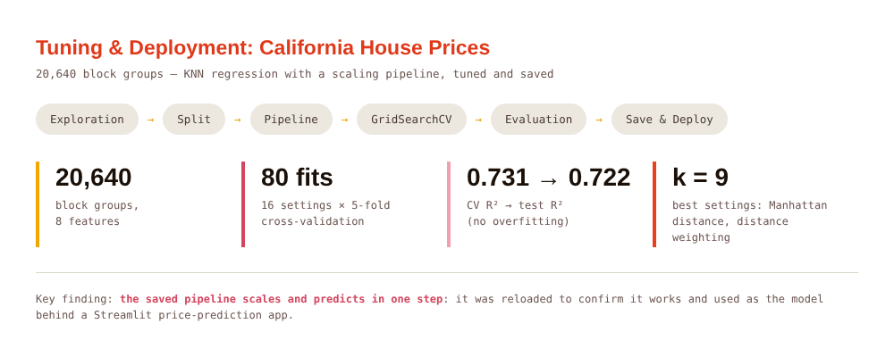
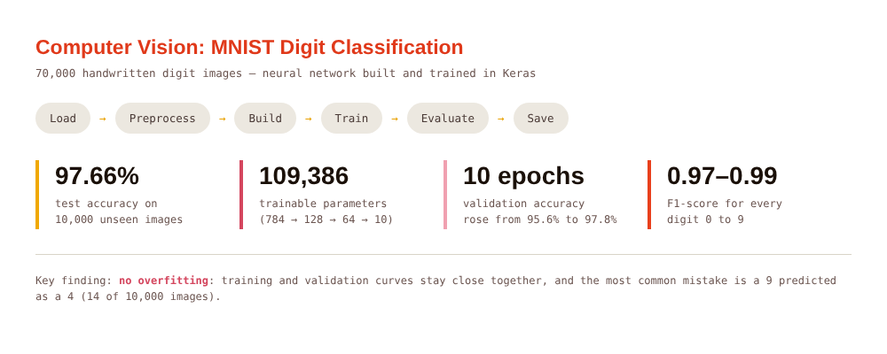
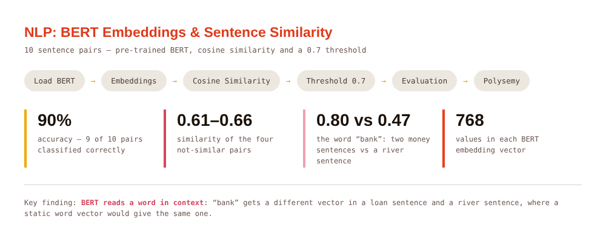
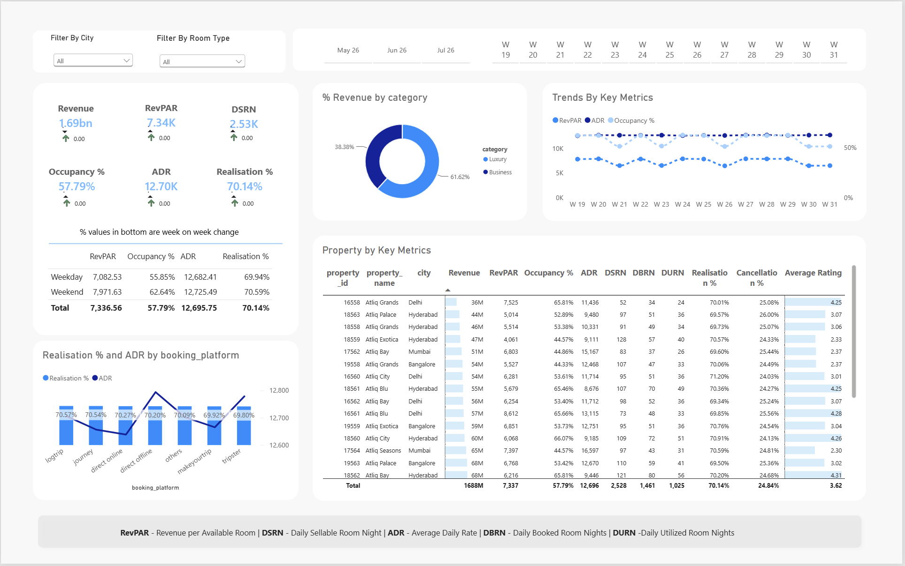
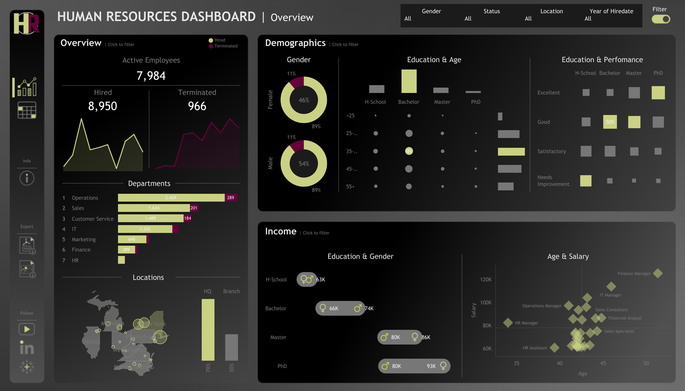

CHELSEA MOGORE · DATA & AI SPECIALIST
Clean data,
iconic work
Hands-on work with real, imperfect datasets — scraping raw HTML, wrangling thousands of missing values with reasoned logic rather than shortcuts, running full exploratory analyses that hold up to scrutiny, tuning and deploying machine learning models, and working with neural networks and language models.
Resume
Background
Education
Strathmore University
2020 – 2024
B.Sc. Informatics and Computer Science
- Graduated with First Class Honours; placed on the Dean's List.
- Relevant coursework: Data Structures & Algorithms, AI & Machine Learning.
Training
Data & AI Specialist Program — Cyber Shujaa
Sept 2026 – Present
- Hands-on program covering the full data pipeline: web scraping, data wrangling, exploratory data analysis, regression and classification, hyperparameter tuning and model deployment, deep learning with neural networks, and natural language processing with BERT.
Skills
LANGUAGES
Python, Java, SQL
DATA & AI TOOLS
pandas, BeautifulSoup, NumPy, Matplotlib, Seaborn, scikit-learn, statsmodels, TensorFlow/Keras, Hugging Face Transformers, Streamlit, Tableau, Power BI
PLATFORMS
Jupyter / Kaggle Notebooks, Google Colab, GitHub
Projects
Featured work




View all projects →
9 projects, from web scraping to deep learning and NLP
Lab Challenges
Challenge writeups


Contact